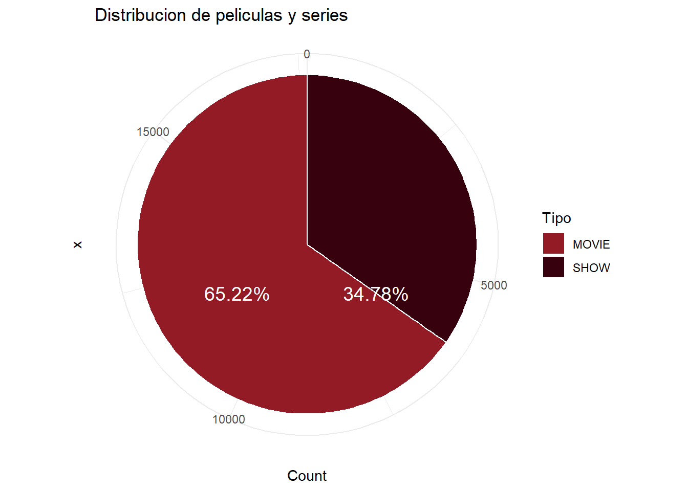
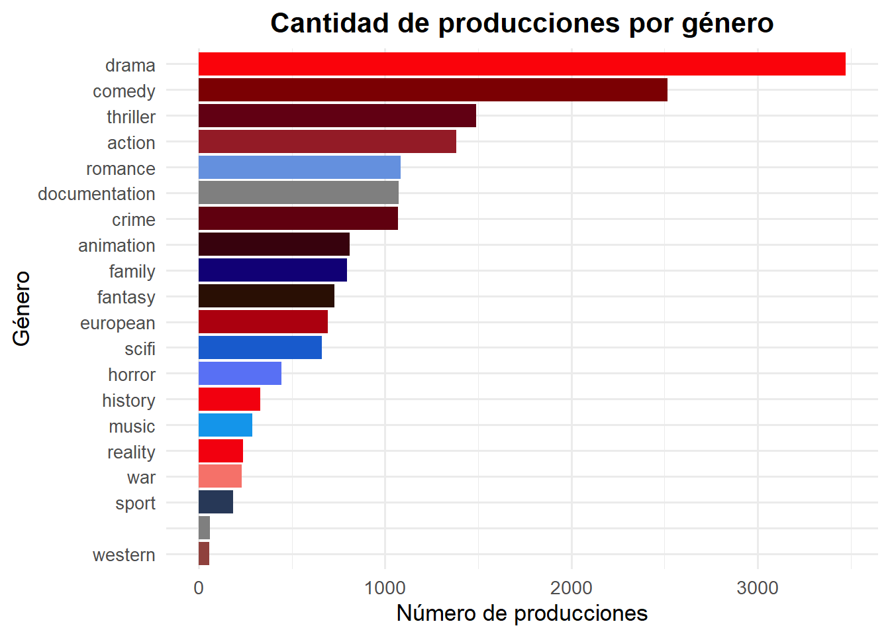
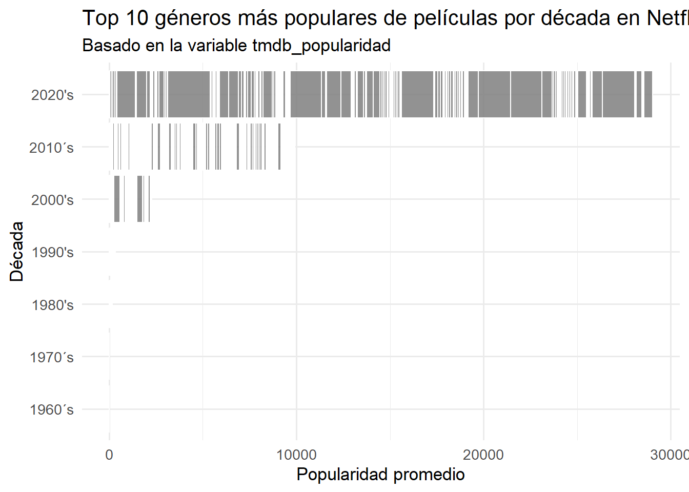
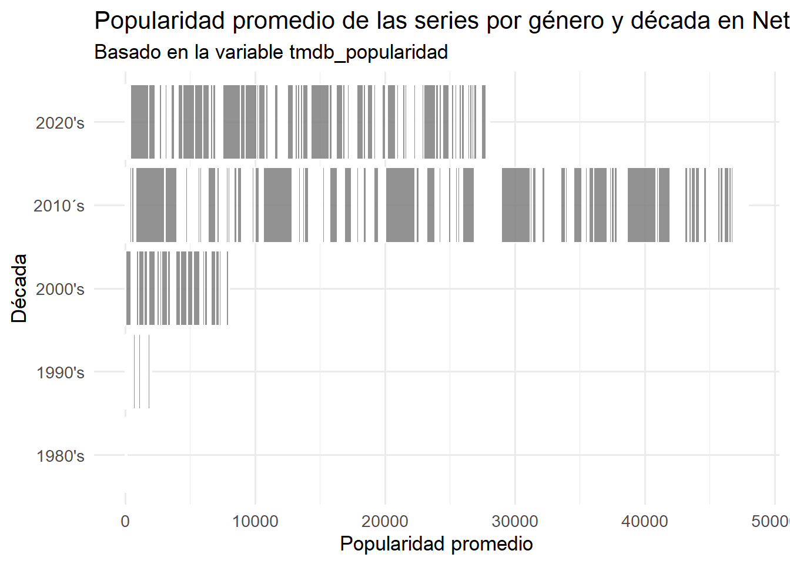
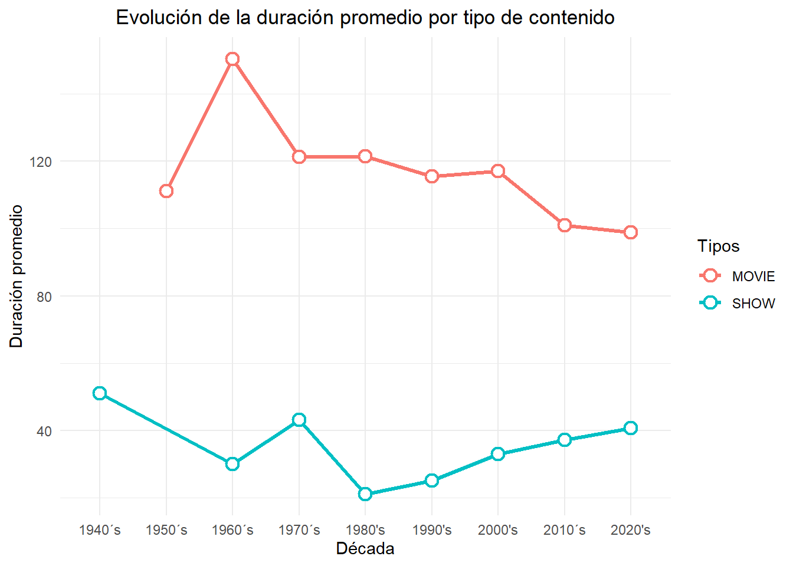
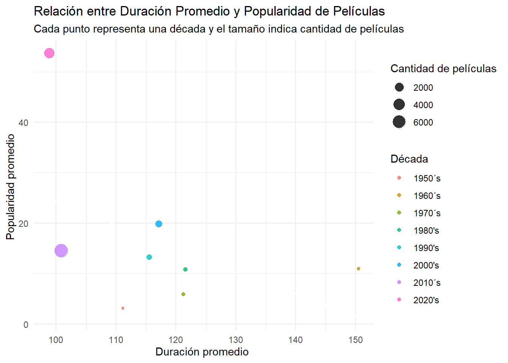
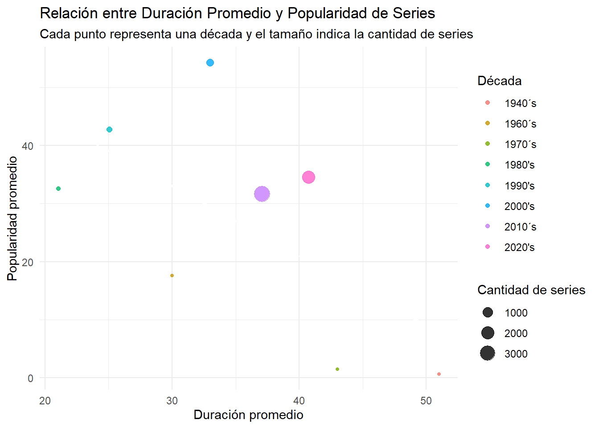
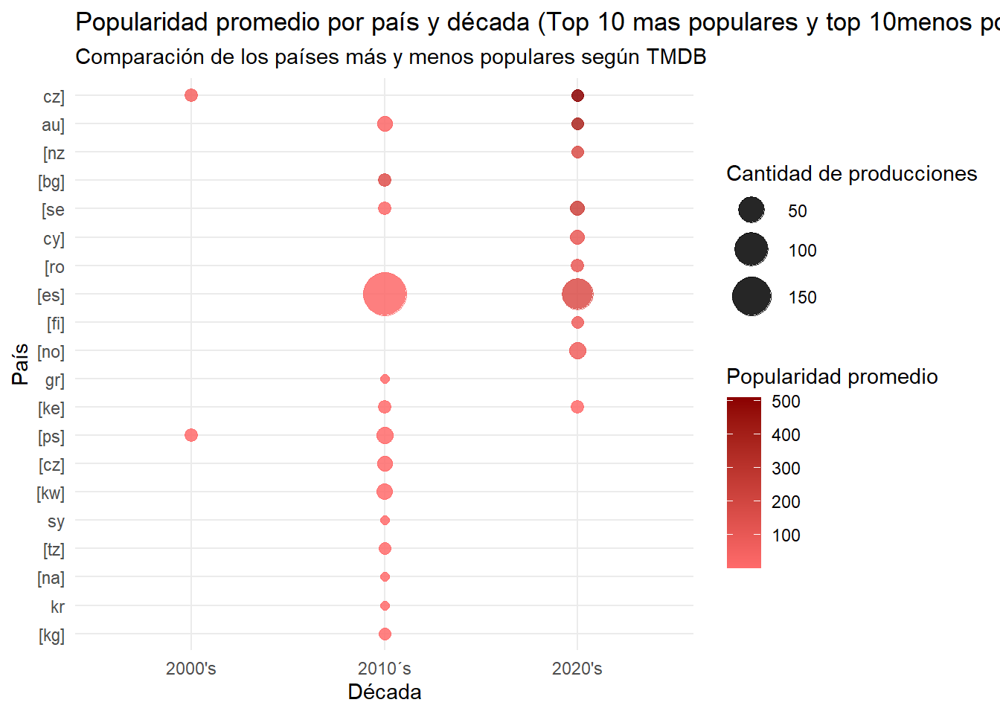

Analisis de Netflix- Netflix’s Gems
Ysabella Núñez, Milena Martinez
2025-10-10

Planteamiento de la Investigación
1.Planteamiento del problema
La cantidad de películas y series que hay en Netflix son miles y de distintos géneros, países y años de lanzamiento. Sin embargo, hay algunas producciones que alcanzan alta popularidad y son ampliamente recomendadas, mientras que otras a pesar de tener buena calidad y alta valoración reciben menos atención del público. Este desequilibrio motiva a la pregunta de ¿qué características del contenido son las que influyen en la visibilidad y éxito de las producciones de la plataforma, cómo pueden identificarse y promoverse aquellas obras de alta calidad que pasan desapercibidas?
El problema principal radica en que gran parte del consumo de los usuarios proviene de sistemas de recomendación automatizados, los cuales tienden a favorecer los títulos que ya son populares. Éste fenómeno crea un ciclo de visibilidad desigual, donde las producciones con menores posición inicial permanecen ocultas y no logran alcanzar al público potencial, reduciendo la diversidad del consumo audiovisuaL.
Ante esta situación, se prefiere escoger un enfoque empírico a partir de información concreta obtenida del dataset, aplicando limpieza, análisis exploratorio multivariado y criterios reproducibles para rankear posibles gemas, buscando observar patrones y resultados reales. La propuesta busca analizar los datos del catálogo para identificar los factores que determinan la popularidad o invisibilidad de una producción, y detectar de forma efectiva las “gemas ocultas“, es decir, aquellas películas y series con buenas valoraciones pero baja popularidad.
Objetivos
Objetivo general
Analizar los datos del catálogo de Netflix para identificar los factores relacionados a la popularidad y visibilidad de las producciones e identificar un conjunto reproducible de “gemas ocultas”.
Objetivos específicos
Realizar la carga y limpieza reproducible del dataset base, asegurando nombres consistentes y formatos adecuados (fechas, duración, géneros).
Analizar cómo ha sido la evolución temporal de las incorporaciones al catálogo y las tendencias del tipo de contenido (Movie vs TV Show).
Proponer y aplicar un criterio reproducible para identificar las 20 “gemas ocultas”.
Marco metodológico
Enfoque de la investigación
El enfoque es cuantitativo y descriptivo. Con el objetivo principal de medir y explicar relaciones entre variables numéricas y cualitativas; además, las elecciones de umbral de gemas, manejo de outliers, dependen de estadísticas reproducibles y cuantificables.
Tipo de investigación
La investigación es descriptiva y correlacional con elementos exploratorios, se enfoca en describir el catálogo, explorar distintas variables y analizar asociaciones y tendencias temporales que podrán servir de base para trabajos predictivos futuros.
Periodo de referencia
El periodo de análisis viene de las fechas disponibles en
date_added y release_year. Se sugiere usar
todo el rango disponible en el dataset para maximizar la inferencia
histórica, y subanálisis por década para mejorar interpretabilidad. La
elección por décadas facilita comparaciones históricas sin suponer
continuidad mensual uniforme.
Procesamiento y análisis de datos (pasos reproducibles)
Carga de librerías y dataset
clean_names() para uniformizar nombres.
Renombrado condicional (soportar esquema en inglés y el script provisto en español).
Normalización de duration (extraer minutos para películas; extraer número de temporadas para series).
Separación de listed_in/genres y country/production_countries con separate_rows().
Manejo de valores faltantes (NA) en clasificaciones y descripciones, detección de duplicados y eliminación basada en título.
Detección de outliers (IQR) y creación de versiones filtradas para análisis sensibles a valores extremos.
Cálculos descriptivos, agrupamientos y gráficas con ggplot2.
library(readr)
library(dplyr)
library(ggplot2)
library(tidyr)
library(here)
library(stringr)
library(dplyr)
library(knitr)
netflix_data <- read_csv("netflix_dataset.csv")
# Cambiar títulos al español
netflix1 <- netflix_data %>%
rename(
ID = id,
Titulos_producciones = title,
Tipos = type,
Descripcion = description,
Año_Lanzamiento = release_year,
Certificacion_edad = age_certification,
Tiempo = runtime,
Generos = genres,
Paises_produccion = production_countries,
Temporadas = seasons,
imdb_ID = imdb_id,
imdb_votos = imdb_votes,
tmdb_popularidad = tmdb_popularity,
tmdb_puntaje = tmdb_score
)
##Para la clasificación de edad se nombra como "No clasificados" los valores NA
netflix_limpio <-netflix1 %>%
mutate(
Certificacion_edad = case_when(
is.na(Certificacion_edad)~"No Clasificado",
TRUE ~ Certificacion_edad)
)
##Para la descripción cambiar los datos NA como "no disponibles"
netflix_limpio <-netflix_limpio %>%
mutate(
Descripcion = case_when(
is.na(Descripcion)~"No disponible",
TRUE ~ Descripcion)
)
###Se reemplazan con "0" los ID , Score, votos, popularidad de las paginas imdb y tmdb que aparezcan en NA
netflix_limpio <- netflix_limpio %>%
mutate(
tmdb_popularidad = ifelse(is.na(tmdb_popularidad), 0, tmdb_popularidad),
tmdb_puntaje = ifelse(is.na(tmdb_puntaje), 0, tmdb_puntaje) ,
imdb_score = ifelse(is.na(imdb_score), 0, imdb_score) ,
imdb_votos = ifelse(is.na(imdb_votos), 0, imdb_votos) ,
imdb_ID = ifelse(is.na(imdb_ID), "desconocido",imdb_ID)
)
#Seasons: como los valores Na de esa categoria, significa que es una pelicula, entonces cambiaremos el valor NA por 0
netflix_limpio <- netflix_limpio %>%
mutate(
Temporadas = ifelse(is.na(Temporadas), 0, Temporadas)
)
#Borramos los titulos faltantes de la data
netflix_limpio <- netflix_limpio %>%
filter(!is.na(Titulos_producciones))
#Eliminación de duplicados
netflix_limpio <- netflix_limpio %>%
distinct(Titulos_producciones, .keep_all = TRUE)
#Limpieza de datos
netflix_limpio <- netflix_limpio %>%
mutate(
#Filtrar años inválidos
Año_Lanzamiento = case_when(
Año_Lanzamiento < 1700 | Año_Lanzamiento > 2025 ~ NA_real_,
TRUE ~ Año_Lanzamiento
),
# Filtrar tiempos de reproducción incongruentes
Tiempo = case_when(
Tiempo < 1 | Tiempo > 300 ~ NA_real_,
TRUE ~ Tiempo
))
#Limpiar String con comas y doble espacios
netflix_limpio <- netflix_limpio %>%
mutate(
Generos = str_trim(str_replace_all(Generos, ",\\s+", ", ")),
Paises_produccion = str_trim(str_replace_all(Paises_produccion, ",\\s+", ", "))
)
##Crear columnas para los géneros
netflix_limpio <- netflix_limpio %>%
mutate(
Generos_Lista = str_split(Generos, ",\\s*")
)
netflix_limpio <- netflix_limpio %>%
separate_rows(Generos, sep = ",\\s*")
netflix_limpio <- netflix_limpio %>%
mutate(
Paises_produccion = str_to_lower(Paises_produccion),
Paises_produccion = str_replace_all(Paises_produccion, "\\$|\\$|'", ""),
Paises_produccion = str_trim(Paises_produccion)
) %>%
separate_rows(Paises_produccion, sep = ",\\s*")
options(encoding = "UTF-8")
Sys.setlocale("LC_ALL", "es_ES.UTF-8")## [1] "LC_COLLATE=es_ES.UTF-8;LC_CTYPE=es_ES.UTF-8;LC_MONETARY=es_ES.UTF-8;LC_NUMERIC=C;LC_TIME=es_ES.UTF-8"#Paso 2: Crear variables y organizar la data de la manera necesaria para realizar la investigación
##Creamos una varible sobre Decadas
netflix_limpio<- netflix_limpio%>%
mutate(
decada = case_when(
Año_Lanzamiento < 1950 ~ "1940´s",
Año_Lanzamiento < 1960 ~ "1950´s",
Año_Lanzamiento < 1970 ~ "1960´s",
Año_Lanzamiento < 1980 ~ "1970´s",
Año_Lanzamiento < 1990 ~ "1980's",
Año_Lanzamiento < 2000 ~ "1990's",
Año_Lanzamiento < 2010 ~ "2000's",
Año_Lanzamiento < 2020 ~ "2010´s",
Año_Lanzamiento >= 2020 ~ "2020's"
)
)
##Creamos dos tablas, una con la información de imdb y otra con la información de tmdb
vars_tmdb <- c("ID", "Titulos_producciones", "Tipos", "Año_Lanzamiento", "Temporadas", "Tiempo", "Certificacion_edad", "Generos", "Paises_produccion",
"tmdb_popularidad", "tmdb_puntaje", "decada")
netflix_tmdb <- netflix_limpio %>%
select(all_of(vars_tmdb))
netflix_tmdb_pelis <- netflix_tmdb %>%
filter(Tipos == "MOVIE")
##Filtrar las películas y series de las tablas de tmdb
###Tablas de películas y series para tmdb
netflix_tmdb_pelis <- netflix_tmdb %>%
filter(Tipos == "MOVIE")
netflix_tmdb_series <- netflix_tmdb %>%
filter(Tipos == "SHOW")
#Mejoras, por si acaso, antes de realizar las estadisticas
netflix_limpio <- netflix_limpio %>%
mutate(across(c(Tiempo, tmdb_popularidad, tmdb_puntaje), as.numeric))Resultados y Análisis
##Analisis general del catalogo de Netflix
1. Variables Cuantitativas
Se analizaron cinco variables cuantitativas clave: Año_Lanzamiento, Tiempo, Temporadas, tmdb_popularidad y tmdb_puntaje. A continuación, se presentan los principales estadísticos descriptivos:
# Seleccionar variables cuantitativas
vars_cuantitativas <- netflix_limpio %>%
select(Año_Lanzamiento, Tiempo, tmdb_popularidad, tmdb_puntaje)
# Calcular estadísticos descriptivos
resumen_estadistico <- vars_cuantitativas %>%
summarise(
Media = sapply(., mean, na.rm = TRUE),
Mediana = sapply(., median, na.rm = TRUE),
Minimo = sapply(., min, na.rm = TRUE),
Maximo = sapply(., max, na.rm = TRUE),
Q1 = sapply(., function(x) quantile(x, 0.25, na.rm = TRUE)),
Q3 = sapply(., function(x) quantile(x, 0.75, na.rm = TRUE)),
Rango_Intercuartil = Q3 - Q1
)
# Transponer la tabla
resumen_estadistico <- t(resumen_estadistico)
colnames(resumen_estadistico) <- colnames(vars_cuantitativas)
# Formatear según tipo de variable
resumen_estadistico_formateado <- resumen_estadistico
resumen_estadistico_formateado[, c("Año_Lanzamiento", "Tiempo")] <-
round(as.numeric(resumen_estadistico_formateado[, c("Año_Lanzamiento", "Tiempo")]), 0)
resumen_estadistico_formateado[, c("tmdb_popularidad", "tmdb_puntaje")] <-
round(as.numeric(resumen_estadistico_formateado[, c("tmdb_popularidad", "tmdb_puntaje")]), 2)
# Mostrar tabla con kable
kable(resumen_estadistico_formateado, caption = "Resumen estadístico de variables cuantitativas del catálogo de Netflix")| Año_Lanzamiento | Tiempo | tmdb_popularidad | tmdb_puntaje | |
|---|---|---|---|---|
| Media | 2016 | 80 | 28.69 | 6.62 |
| Mediana | 2018 | 90 | 9.73 | 6.90 |
| Minimo | 1945 | 2 | 0.00 | 0.00 |
| Maximo | 2022 | 240 | 2274.04 | 10.00 |
| Q1 | 2015 | 45 | 3.75 | 6.10 |
| Q3 | 2020 | 107 | 22.82 | 7.50 |
| Rango_Intercuartil | 5 | 62 | 19.08 | 1.40 |
Con estos datos, se puede comprender diversos datos importante para el conocimiento de la data:
Año de Lanzamiento El análisis de esta variable revela una fuerte concentración en contenido contemporáneo. La mediana en 2018 y la media en 2016, sugieren que la mitad de las producciones más recientes se han estrenado en 2018 o posteriormente.El rango intercuartílico pequeño (5 años) refleja que la mayoría de producciones se concentran entre 2015 y 2020. La presencia de valores atípicos (outliers), representados por producciones muy antiguas o muy recientes, explica la dispersión fuera de este intervalo, pero no alteran la tendencia central del catálogo.
Tiempo de Duración (Películas) Las películas presentan un tiempo promedio de 80 minutos y mediana de 90 minutos, lo que refleja que predominan producciones de una duracion estandar, ni muy cortas ni excesivamente largas. La diferencia entre mínimo y máximo indica la existencia de outliers (películas extremadamente cortas o muy extensas).
Popularidad TMDB El puntaje promedio de 28.69 es significativamente superior a la mediana de 9.73, lo que indica una distribución sesgada a la derecha.Este patrón estadístico coincide con la realidad de la plataforma, donde un conjunto de grandes éxitos globales destaca notablemente sobre la popularidad general del catálogo.
Puntaje TMDB Los puntajes muestran una valoración más consistente y homogénea del contenido. La mediana (6.9) se encuentra muy próxima a la media (6.62), lo que implica que los puntajes de las producciones se concentran de manera estrecha alrededor de estos valores medios. El rango intercuartílico de 1.4 confirma esta baja dispersión, sugiriendo que la mayoría de las producciones obtienen calificaciones de calidad relativamente similares. Esta consistencia indica que el catálogo mantiene un umbral de calidad homogéneo.
2. Variables Categóricas
Tipo de contenido
Tipos_grafic <- netflix_limpio %>%
group_by(Tipos) %>%
summarise( Count = n(), .groups = "drop")%>%
mutate(Porcentaje = round(Count / sum(Count)*100, 2))
grafico_tipos_pie <- ggplot(Tipos_grafic, aes(x ="", y= Count, fill = Tipos)) +
geom_bar(stat = "identity", width = 1, color = "white")+
geom_text(aes(label = paste0(Porcentaje, "%")),
color = "white", size = 5)+
scale_fill_manual( values = c( "MOVIE" ="#931B26", "SHOW" = "#37020D"))+
coord_polar(theta = "y")+
labs(
title = "Distribucion de peliculas y series",
fill = "Tipo"
)+
theme_minimal()
print(grafico_tipos_pie)
Películas (MOVIE) representan aproximadamente el 65.22% del catálogo.
Series (SHOW) representan el 34.78%.
Esto muestra un predominio claro de películas, aunque el porcentaje de series sigue siendo significativo.
netflix_limpio <- netflix_limpio %>%
mutate(
Generos = str_to_lower(Generos),
Generos = str_replace_all(Generos, "\\[|\\]|'", ""),
Generos = str_trim(Generos)
) %>%
separate_rows(Generos, sep = ",\\s*")
conteo_generos <- netflix_limpio%>%
group_by(Generos) %>%
summarise(Conteo = n(), .groups = "drop") %>%
mutate(Porcentaje = round(Conteo / sum(Conteo)*100, 2))
grafico_generos <- ggplot(conteo_generos, aes(x = reorder(Generos, Conteo), y = Conteo, fill = Generos)) +
geom_col(show.legend = FALSE) +
coord_flip() +
scale_fill_manual( values = c( "action" ="#931B26",
"animation" = "#37020D",
"comedy" = "#7B0003",
"fantasy"= "#290F04",
"thriller"= "#610013",
"scifi"= "#185ACC",
"drama" = "#FA030B",
"family"= "#110075",
"music"= "#1495EA",
"horror"= "#5870F4",
"crime"= "#60000F",
"european"= "#AB000F",
"documentarion"= "",
"history"="#F2000F",
"reality"="#F2000F",
"romance"= "#6490DE",
"sport"= "#273857",
"war"= "#F57169",
"western"="#8F413D"))+
labs(
title = "Cantidad de producciones por género",
x = "Género",
y = "Número de producciones"
) +
theme_minimal(base_size = 13) +
theme(
plot.title = element_text(hjust = 0.5, face = "bold"),
axis.text.y = element_text(size = 10)
)
print(grafico_generos)
Los géneros más frecuentes en el catálogo son:
1.Drama
2.Comedy
3.Thriller
4.Action
5.Romance
Esto muestra que Netflix apuesta por géneros populares y de amplio alcance, mientras que géneros más especializados (e.g., Western, Music, History) son menoress. Esta distribución también explica patrones de éxito: los géneros más frecuentes tienden a generar mayor cantidad de producciones con alto puntaje promedio.
Analisis de exitos
##Análisis general de los patrones de éxito en el catálogo de Netflix
El análisis busca identificar los factores asociados al éxito de las producciones del catálogo, medido principalmente a través de las variables tmdb_popularidad (popularidad) y tmdb_puntaje (calificación). Para ello, se se elaboraron visualizaciones comparativas por década, tipo de contenido, duración, género y país de origen.
1.Popularidad por género y década
# Calcular la popularidad promedio por género (solo películas)
top10_generos <- netflix_tmdb_pelis %>%
group_by(Generos) %>%
summarise(popularidad_promedio = mean(tmdb_popularidad, na.rm = TRUE)) %>%
arrange(desc(popularidad_promedio)) %>%
slice_head(n = 10) %>%
pull(Generos)
# Filtrar el dataset original solo con esos 20 géneros
netflix_tmdb_pelis_top10 <- netflix_tmdb_pelis %>%
filter(Generos %in% top10_generos)
# Volver a graficar solo con esos géneros
genero_popularidad_pelis_top10 <- ggplot(netflix_tmdb_pelis_top10,
aes(x = decada, y = tmdb_popularidad, fill = Generos)) +
geom_col(alpha = 0.85, color = "white") +
scale_fill_manual(values = c("action" ="#931B26",
"animation" = "#37020D",
"comedy" = "#7B0003",
"fantasy"= "#290F04",
"thriller"= "#610013",
"scifi"= "#185ACC",
"drama" = "#FA030B",
"family"= "#110075",
"music"= "#1495EA",
"horror"= "#5870F4",
"crime"= "#60000F",
"european"= "#AB000F",
"documentary"= "#CF4C4C",
"history"="#F2000F",
"reality"="#F2000F",
"romance"= "#6490DE",
"sport"= "#273857",
"war"= "#F57169",
"western"="#8F413D")) +
coord_flip() +
labs(title = "Top 10 géneros más populares de películas por década en Netflix",
subtitle = "Basado en la variable tmdb_popularidad",
x = "Década",
y = "Popularidad promedio",
fill = "Género") +
theme_minimal(base_size = 13) +
theme(legend.position = "bottom")
# Mostrar el gráfico
print(genero_popularidad_pelis_top10)## Warning: No shared levels found between `names(values)` of the manual scale and
## the data's fill values.
## No shared levels found between `names(values)` of the manual scale and
## the data's fill values.
Los gráficos de barras muestran la evolución del éxito por género a lo largo de las décadas, diferenciando entre películas y series:
El análisis de la popularidad promedio de los géneros revela una clara concentración de las películas más populares en las décadas recientes, principalmente la de 2010 y 2020, con las películas más antiguas prácticamente sin representación en los puntajes altos. Aunque la mayoría de los géneros se sitúan en un rango de popularidad promedio bajo, los picos más altos, que superan las 100.000 unidades, están impulsados consistentemente por géneros como Acción, Crimen, Animación y Ciencia Ficción.
# --- Calcular el top 10 de géneros más populares ---
top10_generos_series <- netflix_tmdb_series %>%
group_by(Generos) %>%
summarise(popularidad_promedio = mean(tmdb_popularidad, na.rm = TRUE)) %>%
arrange(desc(popularidad_promedio)) %>%
slice_head(n = 10) %>%
pull(Generos)
# --- Filtrar dataset solo con esos géneros ---
netflix_tmdb_series_top10 <- netflix_tmdb_series %>%
filter(Generos %in% top10_generos_series)
# --- Graficar ---
genero_popularidad_series_top10 <- ggplot(netflix_tmdb_series_top10 , aes(x = decada, y = tmdb_popularidad, fill = Generos)) +
geom_col(alpha = 0.85, color = "white") +
scale_fill_manual(values = c("action" ="#931B26",
"animation" = "#37020D",
"comedy" = "#7B0003",
"fantasy"= "#290F04",
"thriller"= "#610013",
"scifi"= "#185ACC",
"drama" = "#FA030B",
"family"= "#110075",
"music"= "#1495EA",
"horror"= "#5870F4",
"crime"= "#60000F",
"european"= "#AB000F",
"documentarion"= "",
"history"="#F2000F",
"reality"="#F2000F",
"romance"= "#6490DE",
"sport"= "#273857",
"war"= "#F57169",
"western"="#8F413D")) +
coord_flip() +
labs(title = "Popularidad promedio de las series por género y década en Netflix",
subtitle = "Basado en la variable tmdb_popularidad",
x = "Década",
y = "Popularidad promedio",
fill = "Género") +
theme_minimal(base_size = 13) +
theme(legend.position = "bottom")
# --- Mostrar el gráfico ---
print(genero_popularidad_series_top10)## Warning: No shared levels found between `names(values)` of the manual scale and
## the data's fill values.
## No shared levels found between `names(values)` of the manual scale and
## the data's fill values.
El análisis de las series en Netflix muestra una situación similar a la de las películas, con la popularidad promedio concentrada en las décadas de 2010 y 2020. El rango de popularidad es muy amplio, pero la mayoría de las series se agrupan en valores bajos (cerca de 0). Los picos de popularidad más altos, que superan las 50.000 unidades, están impulsados por géneros como Crimen, Drama y Acción, y de manera notoria, el género de Ciencia Ficción, que alcanza algunos de los valores más altos. Al igual que en las películas, las series de las décadas anteriores a 2000 tienen una popularidad promedio muy baja o nula.
En conjunto, los resultados indican que la diversificación de géneros ha sido clave en la expansión del catálogo, aunque los géneros narrativos clásicos siguen concentrando el mayor éxito.
3. Evolución temporal de la duración promedio
El gráfico de líneas que relaciona la duración promedio por tipo de contenido a lo largo de las décadas muestra una tendencia diferenciada
# Grafico de lineas
##------------------Calcular la duracion promedio por tipo de contenido
netflix_limpio %>%
group_by(decada, Tipos) %>%
summarise(duracion_promedio = mean(Tiempo, na.rm = TRUE)) %>%
ggplot(aes(x = decada, y = duracion_promedio, color = Tipos, group = Tipos)) +
geom_line(size = 1.2) +
geom_point(size = 3, shape = 21, fill = "white", stroke = 1.2) +
scale_x_discrete() +
labs(title = "Evolución de la duración promedio por tipo de contenido",
x = "Década", y = "Duración promedio", color = "Tipos") +
theme_minimal() +
theme(plot.title = element_text(hjust = 0.5))## `summarise()` has grouped output by 'decada'. You can override using the
## `.groups` argument.
Este gráfico de líneas muestra tendencias opuestas en la duración promedio del contenido a lo largo de las décadas. La duración promedio de las películas (línea roja) ha ido disminuyendo constantemente desde su punto máximo en los años 1960 (casi 140 minutos) hasta estabilizarse en torno a los 100 minutos en la actualidad. Por otro lado, la duración promedio de los episodios de las series (línea azul), aunque se mantuvo baja en los 80 y 90, ha experimentado un ligero pero constante aumento desde los 2000, sugiriendo que los episodios de series se han hecho un poco más largos recientemente, mientras que las películas son cada vez más cortas en promedio.
####4. Relación entre duración y popularidad
##----------------Calcular la duracion promedio y la popularidad de las pelis
duracion_popularidad_decada <- netflix_tmdb_pelis %>%
group_by(decada) %>%
summarise(
duracion_promedio = mean(Tiempo, na.rm = TRUE),
popularidad_promedio = mean(tmdb_popularidad, na.rm = TRUE),
cantidad = n()
)
ggplot(duracion_popularidad_decada, aes(x = duracion_promedio, y = popularidad_promedio)) +
geom_point(aes(size = cantidad, color = decada), alpha = 0.8) +
geom_smooth(method = "lm", se = FALSE, color = "white", linetype = "dashed") +
labs(
title = "Relación entre Duración Promedio y Popularidad de Películas",
subtitle = "Cada punto representa una década y el tamaño indica cantidad de películas",
x = "Duración promedio ",
y = "Popularidad promedio ",
size = "Cantidad de películas",
color = "Década"
) +
theme_minimal()## `geom_smooth()` using formula = 'y ~ x'
#Correlacion del tiempo con la popularidad
correlacion_1 <- cor(netflix_tmdb_pelis$Tiempo, netflix_tmdb_pelis$tmdb_popularidad, use="complete.obs")
print(correlacion_1)## [1] 0.02352746Este diagrama de burbujas, que compara la duración promedio con la popularidad de las películas por década, revela que la mayor parte del catálogo de Netflix se concentra en el contenido más reciente y corto. Las burbujas más grandes, que representan la mayor cantidad de películas, corresponden a las décadas de 2010 y 2020; estas películas son las más cortas (cercanas a 100 minutos) y tienen una popularidad promedio baja a moderada. Por otro lado, las películas más antiguas (1960s y 1970s) tienen duraciones más largas (cercanas a 150 minutos) y, aunque su popularidad es variada, la cantidad de títulos es mínima, lo que demuestra que Netflix prioriza la cantidad de producciones actuales y de duración estándar sobre el contenido histórico más extenso.
El resultado \(r = 0.0235\) establece que no existe una relación lineal significativa entre la duración promedio de las películas y su nivel de popularidad. Al ser positivo, sugiere una relación lineal directa muy débil.En términos prácticos, el tiempo que dura una película (si son 90 o 150 minutos) no es un factor determinante para predecir qué tan popular será en la plataforma.
##----------------Calcular la duracion promedio y la popularidad de las pelis
duracion_popularidad_decada <- netflix_tmdb_series %>%
group_by(decada) %>%
summarise(
duracion_promedio = mean(Tiempo, na.rm = TRUE),
popularidad_promedio = mean(tmdb_popularidad, na.rm = TRUE),
cantidad = n()
)
ggplot(duracion_popularidad_decada, aes(x = duracion_promedio, y = popularidad_promedio)) +
geom_point(aes(size = cantidad, color = decada), alpha = 0.8) +
geom_smooth(method = "lm", se = FALSE, color = "white", linetype = "dashed") +
labs(
title = "Relación entre Duración Promedio y Popularidad de Series",
subtitle = "Cada punto representa una década y el tamaño indica la cantidad de series",
x = "Duración promedio",
y = "Popularidad promedio",
size = "Cantidad de series",
color = "Década"
) +
theme_minimal()## `geom_smooth()` using formula = 'y ~ x'
Este diagrama de burbujas, que compara la duración promedio de los episodios con la popularidad de las series por década, muestra que la popularidad más alta no se asocia a un patrón claro de duración. Las dos burbujas más grandes, que representan la mayor cantidad de series (décadas de 2010 y 2020), tienen una duración promedio muy similar (alrededor de 38 a 40 minutos), pero su popularidad promedio varía ligeramente. Los picos de popularidad son alcanzados por series de décadas anteriores (1990s y 1980s), cuyas burbujas son mucho más pequeñas (menos cantidad de series), con duraciones que varían entre los 25 y 35 minutos. Esto demuestra que la mayor parte del catálogo de Netflix se centra en series con episodios de duración estándar (cerca de 40 minutos), pero la popularidad extrema es un fenómeno raro y disperso, sin depender directamente de si el episodio es corto o largo.
#Correlacion del tiempo con la popularidad
correlacion_2<- cor(netflix_tmdb_series$Tiempo, netflix_tmdb_series$tmdb_popularidad, use="complete.obs")
print(correlacion_2)## [1] 0.07661694El resultado \(r = 07661694\) establece que no existe una relación lineal significativa entre la duración promedio de las películas y su nivel de popularidad.
5. Popularidad por país y década (gráfico de burbujas)
#Grafico de burbuja
##----------- Calcular la popularidad promedio por país y década
netflix_tmdb_pelis <- netflix_tmdb_pelis %>%
mutate(
Paises_produccion = str_to_lower(Paises_produccion),
Paises_produccion = str_replace_all(Paises_produccion, "'", ""),
Paises_produccion = str_trim(Paises_produccion)
) %>%
separate_rows(Generos, sep = ",\\s*")
popularidad_pais_decada <- netflix_tmdb_pelis %>%
group_by(decada, Paises_produccion) %>%
summarise(
popularidad_promedio = mean(tmdb_popularidad, na.rm = TRUE),
cantidad = n(),
.groups = "drop"
)
## Calcular top 10 más y menos populares
ranking_paises <- popularidad_pais_decada %>%
group_by(Paises_produccion) %>%
summarise(popularidad_global = mean(popularidad_promedio, na.rm = TRUE)) %>%
arrange(desc(popularidad_global))
top_10_mas <- ranking_paises %>% slice_head(n = 10)
top_10_menos <- ranking_paises %>% slice_tail(n = 10)
paises_filtrados <- bind_rows(top_10_mas, top_10_menos)
## Filtrar el dataset principal
popularidad_filtrada <- popularidad_pais_decada %>%
filter(Paises_produccion %in% paises_filtrados$Paises_produccion)
# --- Gráfico de burbujas para ver la popularidad segun el pais y la decadas
ggplot(popularidad_filtrada,
aes(x = factor(decada),
y = reorder(Paises_produccion, popularidad_promedio),
size = cantidad,
color = popularidad_promedio)) +
geom_point(alpha = 0.85) +
scale_color_gradient(low = "#FF6B6B", high = "darkred") +
scale_size(range = c(2, 10)) +
labs(
title = "Popularidad promedio por país y década (Top 10 mas populares y top 10menos populares)",
subtitle = "Comparación de los países más y menos populares según TMDB",
x = "Década",
y = "País",
color = "Popularidad promedio",
size = "Cantidad de producciones"
) +
theme_minimal()
Este diagrama de burbujas compara la popularidad promedio de producciones por país en las últimas dos décadas. El gráfico muestra una extrema concentración de la popularidad en las décadas de 2010 y 2020, con la década de 2000 teniendo solo un punto atípico (CZ). La mayor cantidad de producciones (tamaño de la burbuja) y los valores más altos de popularidad promedio (color rojo intenso) se asocian principalmente al código [es] (España) en ambas décadas (2010s y 2020s). Esto demuestra que las producciones de España son las más voluminosas y, en promedio, las más populares dentro de este conjunto de países. El resto de los países tiene una cantidad de producciones mucho menor y su popularidad promedio tiende a ser más baja (color rosa claro) y homogénea.